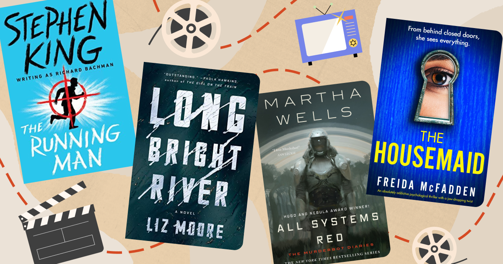

Get Ready for the Year's Biggest Book-to-Screen Adaptations !
They say that the movie is never as good as the book, but at Goodreads we don't think it's a competition!
Sci-fi, AI, cyborgs, bots, and speculative stories are what's hot in 2025 if production studios and streaming services are any indication. Robert Pattinson becomes the face of Mickey7—or is he Mickey8—in the dystopian adaptation of Edward Ashton's bestselling novel in theaters this March. Nobel Prize winner Kazuo Ishiguro's futuristic Klara and the Sun is brought to life by the otherworldly Jenna Ortega, and Alexander Skarsgård puts the sizzle in cyborg in the Murderbot Diaries on Apple TV+.
There's also a healthy dose of '80s and '90s nostalgia this year with remakes of Stephen King's The Running Man and the Christopher Plummer sleeper spy thriller The Amateur. Bridget Jones is dating a younger man. And the franchise that just won't die, a new I Know What You Did Last Summer, will scare and surprise viewers and readers alike.
We've curated this roundup of 4 books that are being adapted for feature films or streaming services for your viewing—and reading—pleasure. Some of these are already out, so you can begin bingeing immediately.
There's also information and links for both the books and their adaptations. Click on the book cover images for more information about each title, along with ratings and reviews from your fellow Goodreads enthusiasts. And you can use the Want to Read button to add any possibilities to your digital shelf.